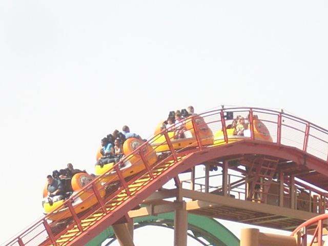
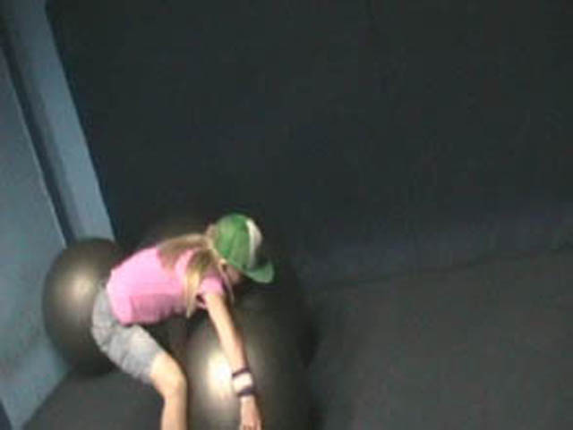
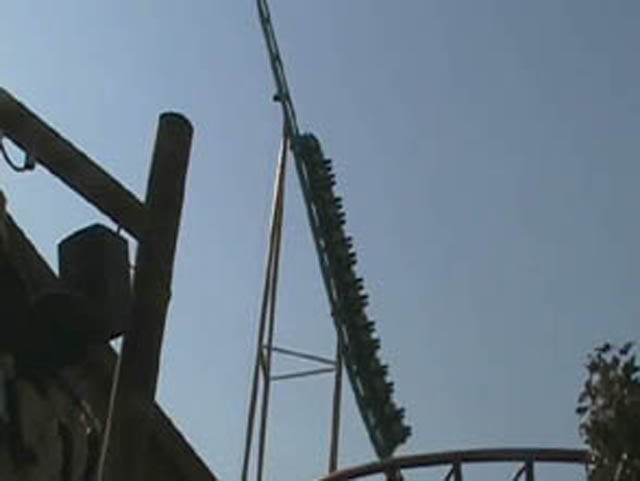
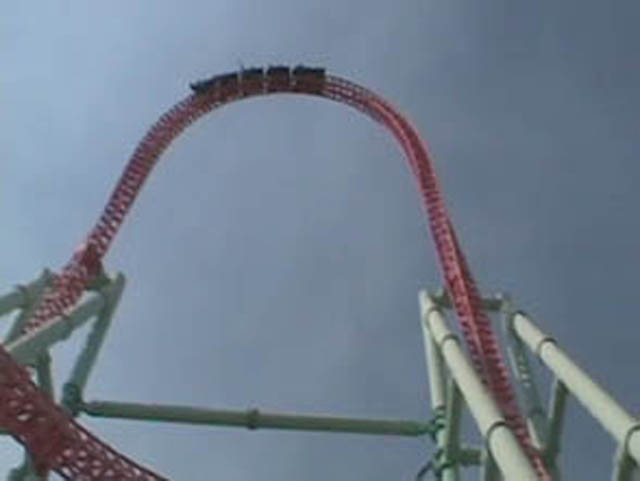

Fall 2007 Photos
Knotts Berry Farm Disneyland Resort
Here is our Fall 2007 Photos Update. A large majority of the update stupidity is just being at these theme parks with a blazing wildfire nearby. But there is still more stupidity and lots of fun. Anyways, we started off at Knotts Berry Farm.
 We can start this update off with Silver Bullet.
We can start this update off with Silver Bullet.
 Silver Bullet was running great today. It even had some force!!!!
Silver Bullet was running great today. It even had some force!!!!
 But no matter how well Silver Bullet is running, it's still the only B&M to lack any sort of whip in it's Heartline Spin.
But no matter how well Silver Bullet is running, it's still the only B&M to lack any sort of whip in it's Heartline Spin.
 And then it's off to Sierra Sidewiner. Complete with Halloween Theming.
And then it's off to Sierra Sidewiner. Complete with Halloween Theming.

Prepare to be Disoriented.
 If only it spun like the Balloons @ SFMM.
If only it spun like the Balloons @ SFMM.
This is even stupider than when Kevin jumped off Twin Falls.
 Peanuts Playhouse. The place to go when the ash gets thick.
Peanuts Playhouse. The place to go when the ash gets thick.

This ball is my only friend.
Curse this wretched fire into the fiery depths of hell!!!!
 Now that the ash has cleared up a little, let's go on a very old rollercoaster that could fall apart.
Now that the ash has cleared up a little, let's go on a very old rollercoaster that could fall apart.

We survived this time.
 More crappy coasters were ridden while the wildfires burned.
More crappy coasters were ridden while the wildfires burned.
And yet, no one seems to care.
Supreme Scream has changed. It barley holds you up at the top.

Xcelerator. Hmmm, What does Xcelerators Top Hat have that Storm Runners doesn't?
 Its a shame that Top Thrill Dragster does nothing after it unlike Xcelerator.
Its a shame that Top Thrill Dragster does nothing after it unlike Xcelerator.
 And nothing goes better with a crazy good ride than a nice thick coat of ash.
And nothing goes better with a crazy good ride than a nice thick coat of ash.
Here is constructioin of Knotts Newest Attraction. The worlds tallest fastest loopiest most badass Panda Express!!!! Looks like SFMM is going to have some tough competion with their Panda Express.
Lousy Cheapstakes. If I have to pay to ride a Screaming Swing, It should at least be better than the free one!!! Skyhawk Rules!!!
 At the end of the day, Ghostrider finally opened for us.
At the end of the day, Ghostrider finally opened for us.
 Ghostrider has gotten so F**king rough. I actually got a migrane from riding it.
Ghostrider has gotten so F**king rough. I actually got a migrane from riding it.
Here's an example of how mush ash there was. Look at the part of the pool that wasn't cleaned.
Disneyland Resort
Home